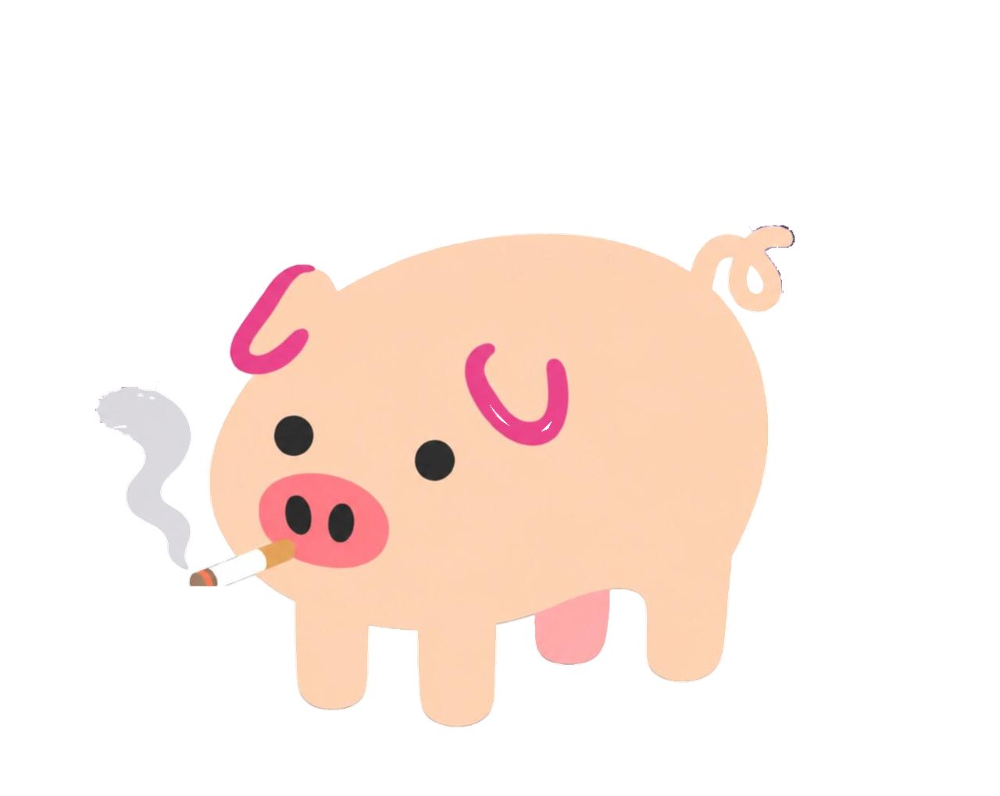

财经简报，也可以有一点陪伴
一份有出处的财经简报，和一只陪你看市场的肥肥猪。
浏览器打开即用，无需安装。
重点，肥肥递给你。
表情演示 · 点一下小猪试试
上证、深成、创业板，标注来源和更新时间。
财经与科技消息放在一起，每条保留原文入口。
在设置里选择板块，把关心的指数放到首页。
在网页里，先认识市场。
肥肥财经 / 网页体验
切换指数，浏览今天的消息，再回到原文了解更多。所有功能都在现在这个网页里。
行情以来源时间为准。网页版与桌面原型共用同一套界面。
指数与市场概览每日消息 · 原文来源

从网页，走到桌面。
拖到顺手的位置，点一下看指数和简报。市场冷暖变化，肥肥也换个表情。
桌宠为 macOS 本地原型，网页版可直接体验。
今天的重点，打开就能看。